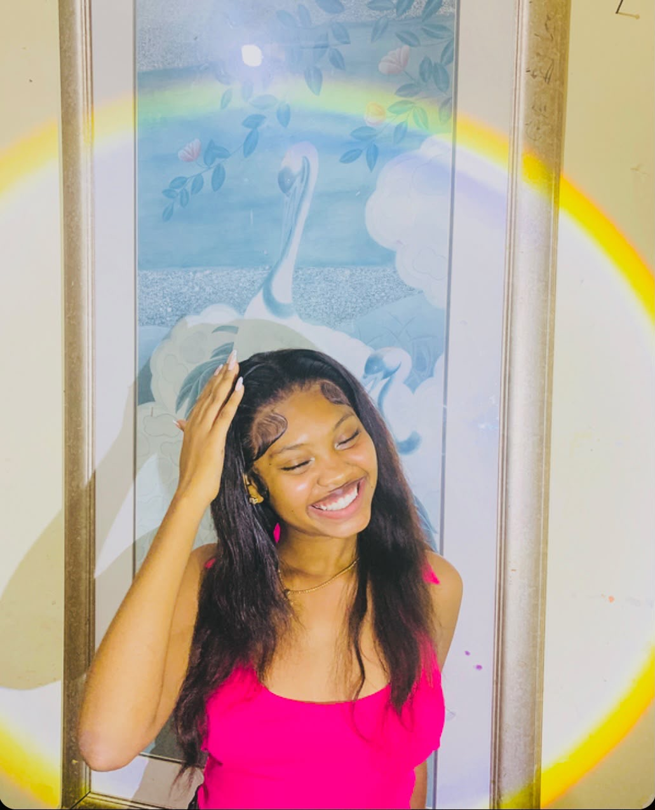
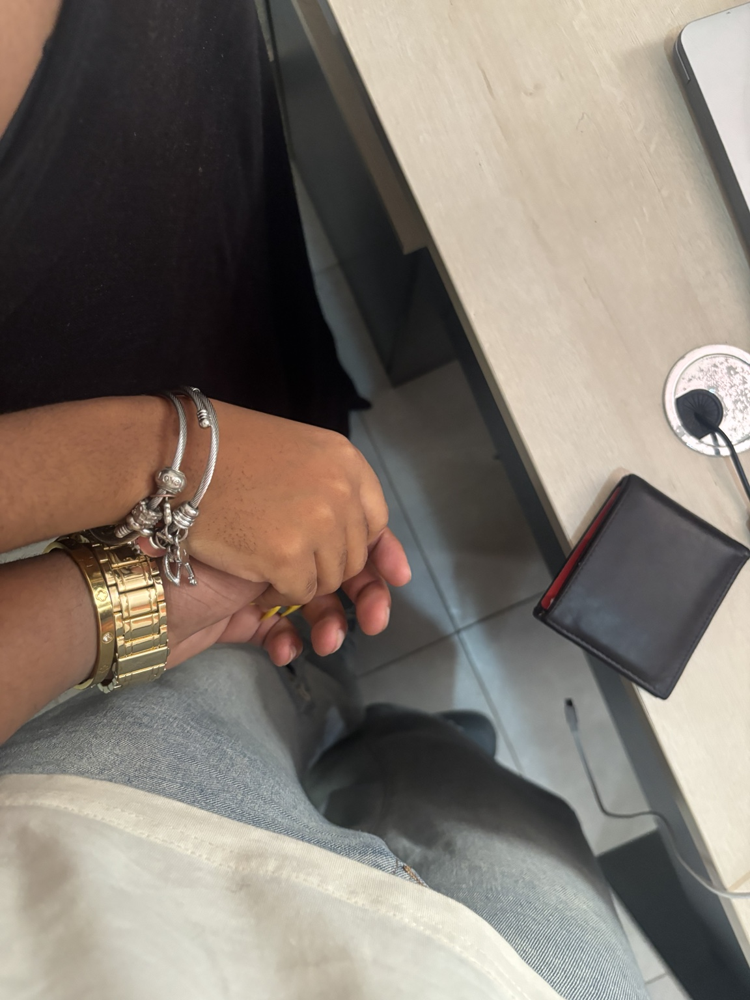
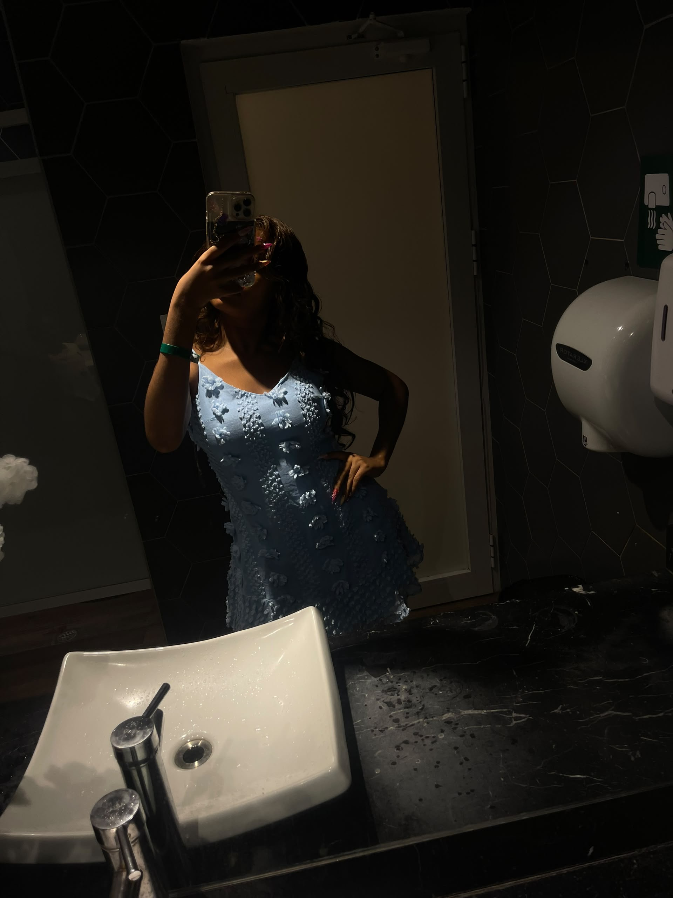
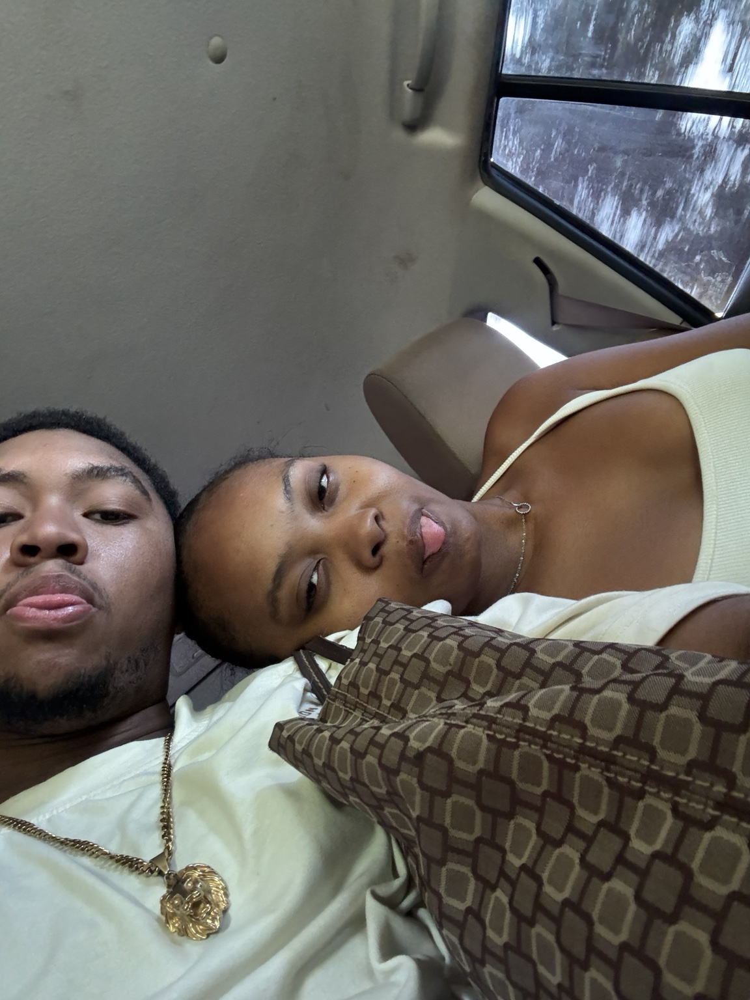

01
Your smile
I love your smile because it can change the whole mood of a moment. Seeing you genuinely happy is one of my favorite things.
ONE PHOTO • ONE REASON
Scroll slowly. I wanted every picture to have something behind it, not just a caption.
I love your smile because it can change the whole mood of a moment. Seeing you genuinely happy is one of my favorite things.

I love the little things you do that you probably don't even realize I notice. Those small moments are part of what makes you special to me.
I love the way you bring your own energy into every room and every conversation. There is something about you that feels completely you.
I could look at pictures of you a hundred times and still find another little detail that makes me smile.

Even the random moments became memories I want to keep. That's one of my favorite things about us.

I love that we can be silly, weird, quiet, or completely unserious together. I don't need every moment to be perfect.

I love the way you care about the people and things that matter to you. It shows a side of you that means a lot to me.
Distance doesn't erase the moments we've shared. It just makes me appreciate every memory and every call even more.
Some pictures instantly take me back to a feeling or a moment. Those are the memories I never want to lose.
At the end of everything, I don't love you because you fit some perfect list. I love you because you're you, and that's the person I chose to build memories with.
AND THERE'S MORE
I could keep going, but I'd rather spend the time making more memories with you.
Read the last page →